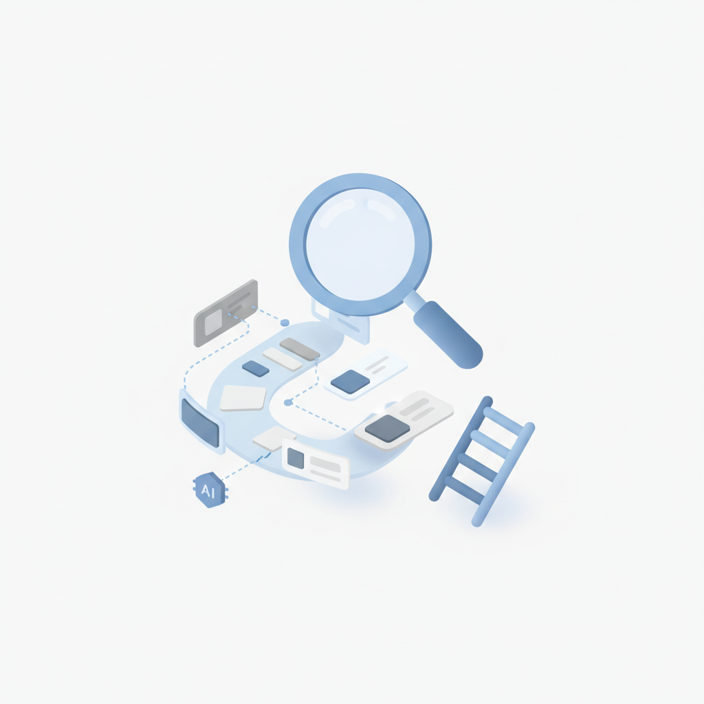
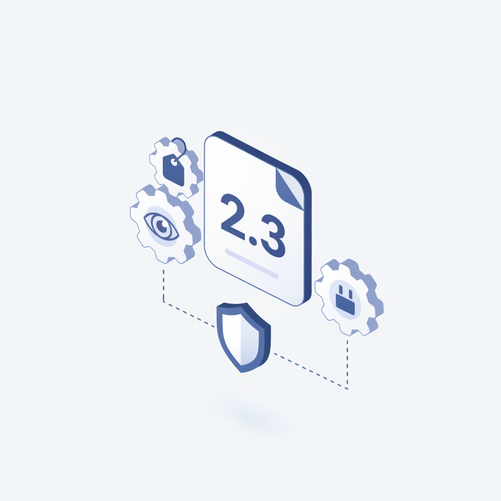
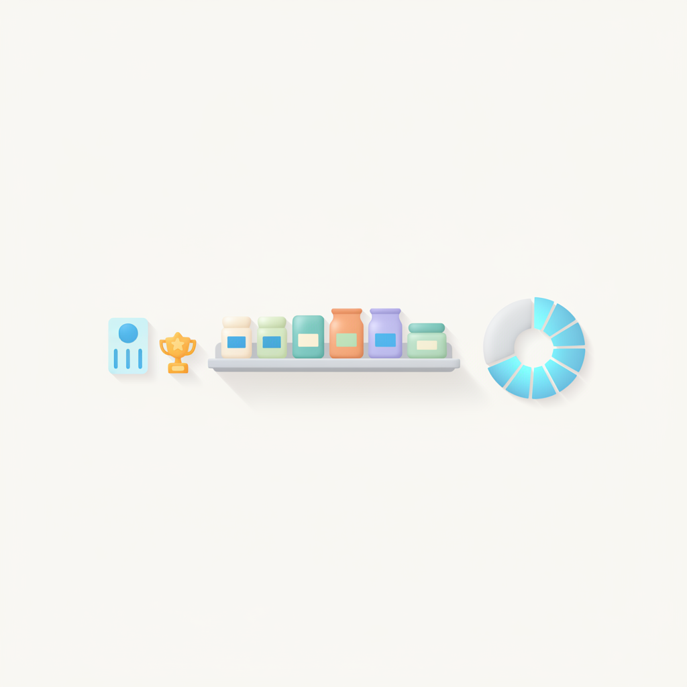
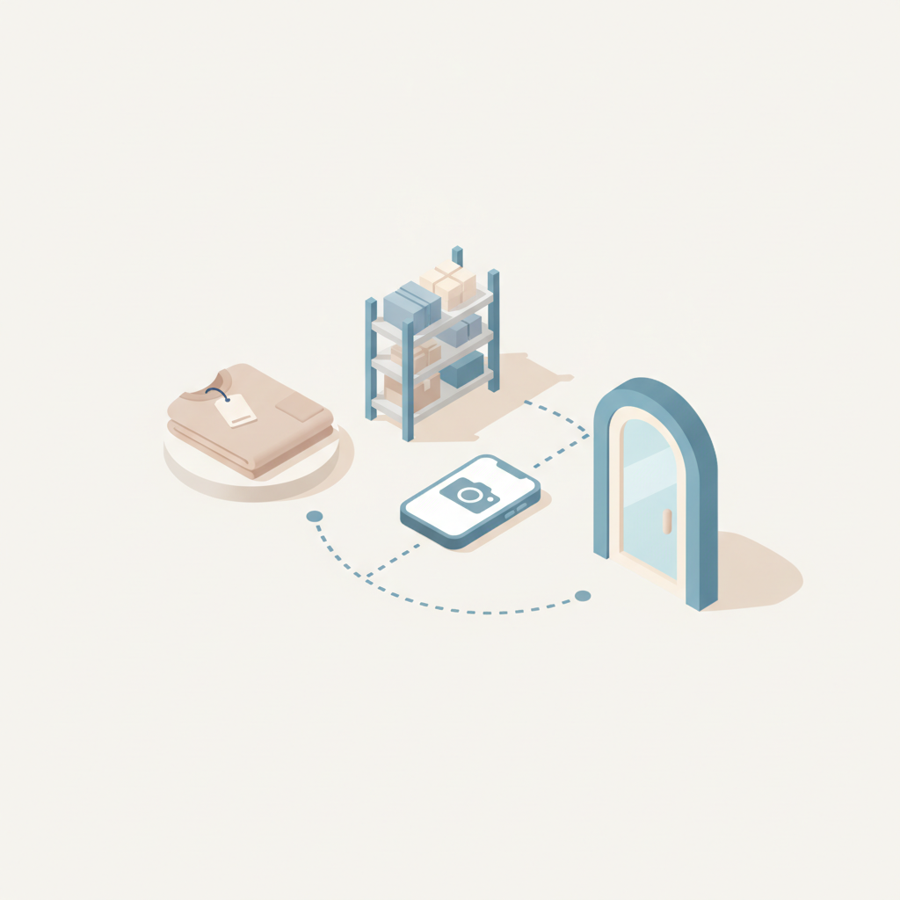
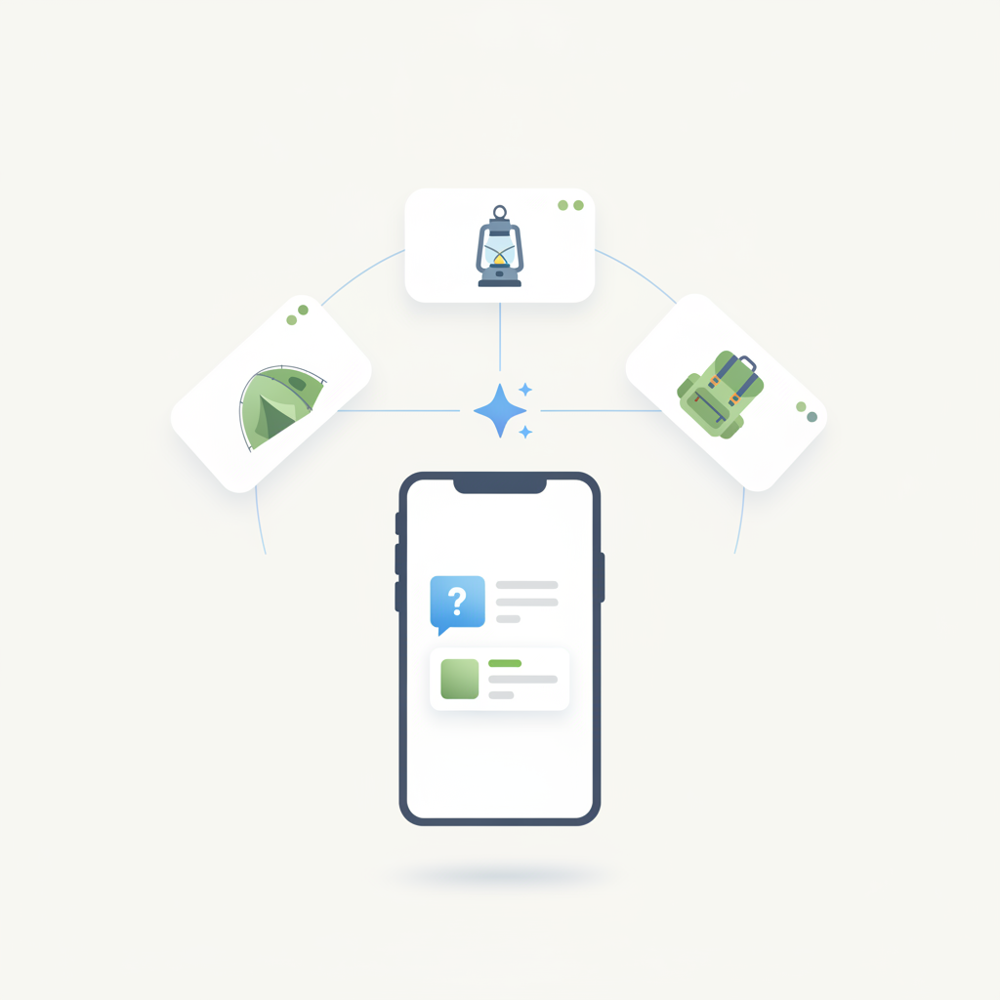
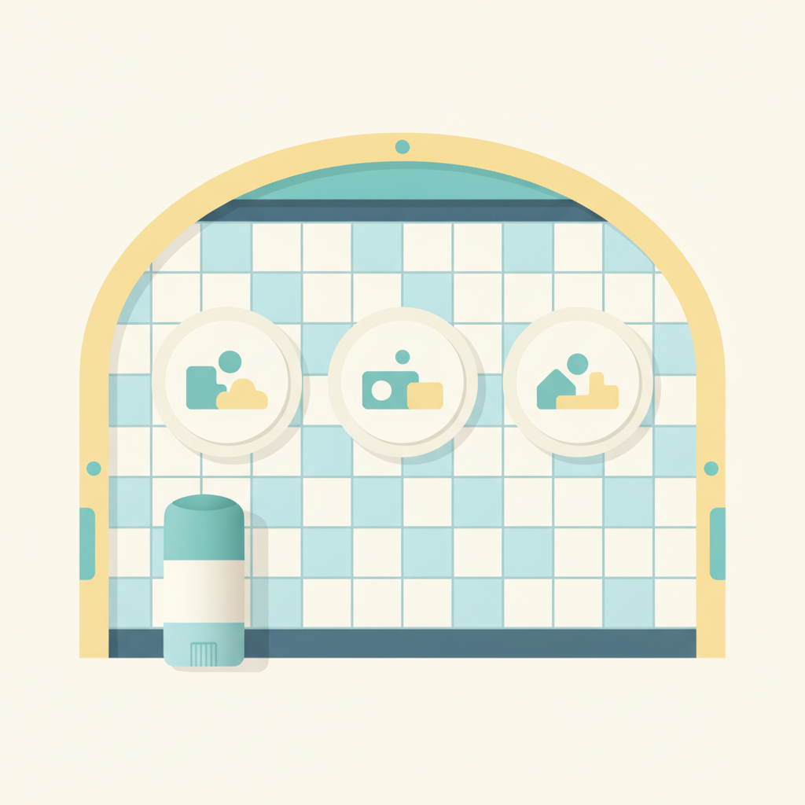
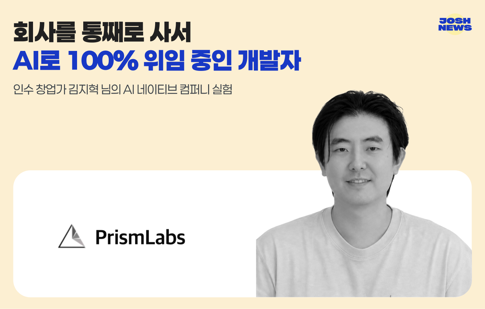

안녕하세요! 수요일 마케팅 소식 전해드립니다 😊 오늘은 Gap Inc.의 '임플로이언서' 확대 소식이 흥미롭습니다. 본사 직원 중심이던 브랜드 크리에이터 프로그램을 매장과 물류센터 직원 전체로 넓힌 건데요, 브랜드 가장 가까이에서 제품을 다루는 사람들이 콘텐츠 생산자가 되는 구조입니다. 인플루언서를 외부에서 섭외하는 방식과는 결이 다르게, 내부 구성원 전체를 브랜드 목소리로 전환하는 시도라는 점에서 앞으로 유사한 시도가 이어질지 살펴볼 만합니다.
빌더조쉬에서는 회사를 통째로 인수한 뒤 AI로 운영을 100% 위임하는 실험을 진행 중인 개발자 이야기를 다루고 있습니다. 창업이 아닌 '인수'라는 진입 방식, 그리고 AI를 단순 도구가 아니라 운영 구조 자체로 설계한다는 접근이 생소한 조합처럼 보이면서도 실제로 작동하고 있다는 점이 흥미롭습니다. 일하는 방식에 대한 상상을 조금 더 넓혀보고 싶다면 오늘 꼭 챙겨보시길 권합니다.
한 주의 중반, 오늘 소식들이 실무에 좋은 자극이 되길 바랍니다! 🚀
오메다의 2026년 2분기 이메일 인게이지먼트 보고서에 따르면, 이메일 클릭의 88.9%가 보안 시스템이나 자동화 프로그램이 생성한 봇 클릭으로 나타났다. 단순 클릭률만으로 이메일 마케팅 성과를 판단하기 어려운 환경이 된 것이다. 이메일 마케터는 클릭률 대신 실제 이용자 반응을 반영하는 대체 지표 도입을 검토해야 할 시점이다.
›
2생성형 AI가 검색 경험을 바꾸면서 소비자가 브랜드를 발견하고 평가하는 방식도 달라지고 있다. 미디어 컨설팅 기업 미디어센스는 기존 SEO를 넘어 AI 검색 환경에 최적화된 새로운 대응 전략이 필요하다고 강조했다. 검색 결과 순위 관리보다 AI가 브랜드 정보를 정확히 종합·제시할 수 있도록 콘텐츠와 데이터를 지속적으로 운영하는 것이 핵심 과제로 부상했다.
›
3글로벌 디지털 광고 기술 표준 기구 IAB 테크랩이 AI 에이전트 기반 광고 운영을 위한 관리 프로토콜 AAMP 2.3을 발표했다. 이번 버전은 기업 환경에서의 AI 에이전트 안정적 운영을 위해 개인정보 보호, 가격 검증, 플랫폼 연동 기능을 보완했다. 에이전틱 광고의 실무 적용이 가속화될 전망으로, 광고 자동화 도입을 준비 중인 마케터라면 표준 동향을 주시할 필요가 있다.
›
4글로벌 리테일 컨설팅 기업 데이몬의 2026년 여름 PB 인텔리전스 리포트에 따르면, 소비자 10명 중 7명이 PB 경쟁력을 이유로 선호하는 유통업체를 선택하는 것으로 나타났다. PB가 단순 가격 경쟁력을 넘어 고객 유치와 충성도를 좌우하는 핵심 요소로 자리 잡고 있다는 분석이다. 리테일 마케터는 PB 브랜딩과 품질 전략을 집객 및 고객 락인 수단으로 적극 활용할 필요가 있다.
›
5갭(Gap Inc.)이 기존 본사 직원 대상이던 브랜드 크리에이터 프로그램을 매장 및 물류센터 직원 전체로 확대했다. 올드 네이비, 갭, 애슬레타, 바나나 리퍼블릭 등 자사 브랜드 홍보에 현장 임직원을 직접 활용하는 '임플로이언서' 전략을 강화한 것이다. 진정성 있는 브랜드 콘텐츠 수요가 높아지는 가운데, 직원을 크리에이터로 육성하는 전략이 인플루언서 마케팅의 새로운 대안으로 주목된다.
›
67월부터 국내 커머스 시장에서 대화형 AI 쇼핑 경험이 본격화됐다. 소비자가 쇼핑 앱에 직접 '이번 주말 캠핑 가는데 뭐가 필요할까'라고 묻고 AI가 추천부터 구매까지 처리하는 방식이 등장한 것이다. AI가 소비자 의사결정의 중간자로 부상함에 따라, 마케터는 AI 추천 알고리즘에 자사 상품이 노출되도록 하는 전략을 새롭게 고민해야 한다.
›
7데오도란트 브랜드 디그리가 유니레버, WPP, 에델만, 뉴욕 MTA와 협업해 여름철 지하철역에 시민들이 온라인에서 쓰던 별명을 실제 역사 광고에 적용하는 옥외광고 캠페인을 선보였다. 소비자가 이미 사용하는 언어와 맥락을 브랜드 메시지에 자연스럽게 녹여내 공감대를 형성한 것이 특징이다. 일상의 불편을 브랜드 경험으로 연결하는 문화적 접근법이 OOH 캠페인의 효과적인 방식으로 참고할 만하다.
›
인수 창업가 김지혁 님의 AI 네이티브 컴퍼니 실험
서울 명동교자와 부산 이재모피자. 맛집 좋아하는 사람들은 한 번쯤 들어본 이름이지? 하지만 회계장부를 더 좋아하는 나, 이들의 감사보고서를 살펴보다가 재밌는 사실을 발견했어.
아티클 읽기 →브랜드 진단부터 지금 당장 해야 할 우선순위까지,
30분 무료 상담에서 함께 정리해드려요.
이미 수십 개 브랜드가 상담받았습니다.
내 브랜드처럼, 함께 고민하는 팀원의 마음으로 봅니다.
스타트업 대표·마케팅 담당자를 위한 30분